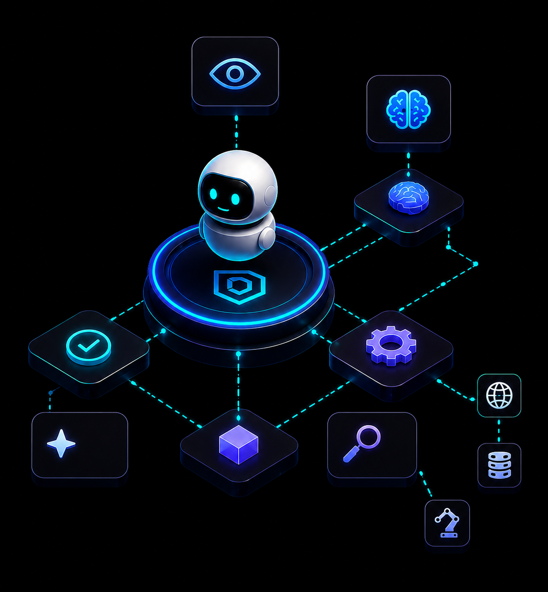
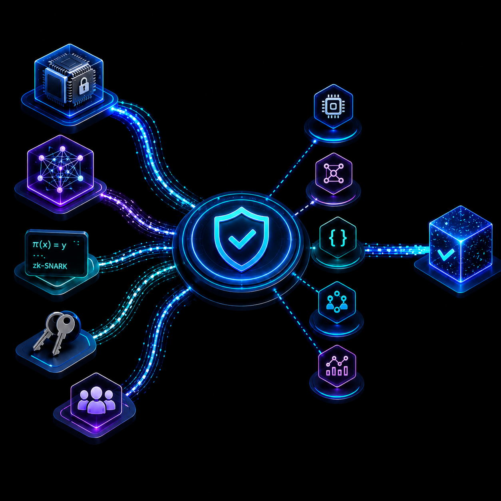

Run your applications wherever they perform best—cloud servers, GPUs, edge devices,
or your existing infrastructure. Iraquin independently verifies the outcome before it
becomes part of shared state.
Keep your software. Verify the outcome.
Applications execute once, while the network independently verifies the result before settlement. This reduces unnecessary duplication and allows computation to scale beyond blockchain virtual machines.
Every interaction with a blockchain comes at a cost. As applications become larger and more
compute-intensive, execution fees quickly become a barrier.
Because applications execute outside the blockchain, Iraquin doesn't charge gas for native
computation. The network settles verified outcomes—not every CPU cycle your application
performs.
Pay for trust. Not computation.
Traditional blockchains recover from incorrect state through chain reorganizations.
Iraquin is designed to move forward.
Invalid outcomes are corrected through verification rather than rewriting previously
accepted history. Applications gain a more predictable settlement model.

AI is beginning to approve loans, execute trades, manage infrastructure, and influence
critical decisions. As autonomous systems become more capable, the question shifts from
what AI can do to whether its outcomes can be trusted.
Iraquin provides a verification layer designed for that future.

Different workloads require different verification strategies. Iraquin is designed to
support cryptographic proofs, trusted execution environments, batch verification, and
future verification models through a common settlement layer.
This allows the network to evolve alongside advances in hardware and cryptography.
Cryptography continues to evolve. Iraquin is designed with modern cryptographic primitives and a roadmap toward post-quantum security, helping ensure the network can adapt to future threats without redesigning its foundation.